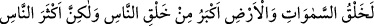
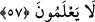

âfetlerden Allah’a sığın!
Keşfü’l-esrâr’da der ki:
Bu mücadeleciler bid’at taraftarları ve Hak sıfatlarını inkâr edenlerdir. Bu, zahmetli
işe girişenlerin mücâdelesidir. bid’at ehlinin cidâli, cehennemliklerin tevili, Eş’arîlerin
yaptığı, filozofların tezvîri, tabiatçıların kanunu. Her bir asırda bir topluluk ortaya çıktı.
Gaylân-ı Kaderî, Bişr-i Mursî, Şeytânu’t-tâk, İbn Ebî Dâvûd, Cehm-i Safvân, Ömer,
Ubeyd ve emsâli kimseler ki Hakk’ın sıfatlarını inkâr ettiler ve kadîm dîni bırakıp kitap
ve sünneti gevşek gördüler, rey ve kıyâsı muhkem tuttular. Bunların maksadları kitap ve
sünneti geride tutmak, ma’kûlü önde tutmaktır. Bu, gönüllerinde olan büyük bir arzudur
ve bu arzularına asla ulaşamayacaklardır.
Mesnevî’den:
A kocakarı, sen Hakk’ın mumunu üflüyorsun,
A ağzı kokan, hem sen yanarsın, hem de başın yanar.
Deniz köpeğin ağzıyla pislenir mi hiç?
Güneş üflemekle söner mi hiç?
Kim Hakk’ın mumuna püf derse,
Kendi ağzı yanar; mum söner mi hiç?
Senin gibi yarasalar, bu dünyanın güneşten
Yetim kalışıyla ilgili pek çok rüyalar görürler.
Aya ve göğe doğru tüküren o dudak,
Boğaz ve ağız, kesile kalsın.
Hiç kuşkusuz o tükürük kendi yüzüne geri döner;
Tükürük göğe doğru yol bulamaz.
Ebû Leheb’in ruhuna “Tebbet” lâneti yağdığı gibi,
Onun üstüne de kıyâmete dek lanet, Rab’den.
57. Elbette göklerin ve yerin yaratılması, insanların yaratılmasından daha büyük
bir şeydir. Fakat insanların çoğu bilmezler.
Aşağıdaki ifâde, gerçeği ortaya koymakta ve üzerinde en çok tartıştıkları ölüm sonrası
diriliş gerçeğini açıklamaktadır:
“Elbette göklerin ve yerin yaratılması,” güç göstergesi olarak “insanların” ikinci
kez “yaratılmasından daha büyük bir şeydir.” Çünkü daha muazzam ve daha
güçlüsünü, hem de bir ilk maddesi ve aslı olmaksızın yaratabilen birinin, aslı ve
maddesi bulunan daha basit ve güçsüzünü yaratması evleviyetle gerekir. Yüce Allah’ın
gökleri ve yeri yarattığını kabul ettikleri halde nasıl olup da kıyâmet günü